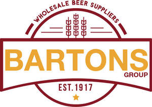

Trade Mark Journal No.2026/010 6 March 2026
UK00004339762 12 February 2026 (21,32,33,35,39)

- Class 21
- Beer steins; Beer mugs; Beer jugs; Beer pitchers; Beer glasses; Pilsner drinking glasses; Drinking steins; Pilsner glasses; Pint tankards; Drinking bottles; Drinking bottles for sports; Coolers for wine; Wine coolers; Beverage glassware; Wine decanters; Wine pourers; Wine glasses; Wine jugs; Wine chillers; Wine aerators; Wine bottle cradles; Wine openers; Wine buckets; Wine tasters [siphons]; Wine strainers; Whisky glasses; Glass decanters; Glass bottles; Glass stoppers for bottles.
- Class 32
- Beer; Malt beer; Non-alcoholic beer; Bock beer; Saison beer; Beers; Low-alcohol beer; Craft beer; Barley wine [Beer]; Barley wine [beer]; Black beer [toasted-malt beer]; Beer and brewery products; Ginger beer; Flavored beer; Wheat beer; Coffee-flavored beer; Beer wort; Non-alcoholic beers; Root beer; Root beers, non-alcoholic beverages; Non-alcoholic beer flavored beverages; Craft beers; Lager; Alcohol-free beers; De-alcoholized beer; Imitation beer; Flavored beers; Black beer; Root beers; Flavoured beers; De-alcoholised beer; Low alcohol beer; Bitter [Beers]; Beer-based beverages; Non-alcoholic malt drinks; Ale; Non-alcoholic malt beverages; Non-alcoholic beer-based cocktails; Beer-based cocktails; Coffee-flavored ale; Lagers; Kvass [non-alcoholic beverage]; Sarsaparilla [non-alcoholic beverage]; Non-alcoholic wine; Kvass [non-alcoholic beverages]; Carbonated non-alcoholic drinks; Cider, non-alcoholic; Cola drinks; Ginger ale; Non-alcoholic beverages with tea flavor; Non-alcoholic beverages flavored with coffee; Malt syrup for beverages; Non-alcoholic beverages flavoured with coffee; Non-alcoholic drinks; Non-alcoholic soda beverages flavoured with tea; Non-alcoholic malt free beverages [other than for medical use]; Non-alcoholic carbonated beverages; Ales; Non-alcoholic flavored carbonated beverages; Alcohol free wine; Alcohol free cider; Non-alcoholic fruit drinks; Non-alcoholic wines; Non-alcoholic beverages; Beverages (Non-alcoholic -); Non-alcoholic beverages flavored with tea; Non-alcoholic fruit vinegar beverages; Non-alcoholic beverages flavoured with tea; De-alcoholized wines; Grape juice beverages; Grape ales; Non-alcoholic grape juice beverages; De-alcoholised wines; Non-alcoholic sparkling fruit juice drinks; Grape juice; Carbonated soft drinks; Fruit flavoured carbonated drinks; Non-carbonated soft drinks; Fruit-flavored soft drinks; Colas [soft drinks]; Flavoured carbonated beverages; Isotonic non-alcoholic drinks; Juice drinks; Low-calorie soft drinks; Soft drinks; Fruit-based soft drinks flavored with tea; Isotonic drinks; Fruit flavoured drinks; Coffee-flavored soft drinks; Soft drinks flavored with tea; Fruit drinks; Fruit flavored soft drinks; Fruit flavored drinks; Fruit-flavoured beverages; Non-alcoholic vegetable juice drinks; Frozen carbonated beverages; Frozen fruit-based drinks; Cordials (non-alcoholic beverages); Syrups for making fruit-flavored drinks; Guarana drinks; Carbohydrate drinks; Fruit-flavored beverages; Smoothies [non-alcoholic fruit beverages]; Slush drinks; Fruit juice drinks; Orange juice drinks; Sherbets [beverages]; Fruit juice beverages (Non-alcoholic -); Non-alcoholic fruit juice beverages; Squashes [non-alcoholic beverages]; Fruit beverages (non-alcoholic); Syrups for making soft drinks; Sherbet beverages; Energy drinks; Vegetable drinks; Fruit-based beverages; Frozen fruit drinks; Syrups used in the preparation of soft drinks; Non-alcoholic fruit cocktails; Sports drinks; Apple juice drinks; Non-alcoholic syrups for making beverages; Syrups for making non-alcoholic beverages; Cocktails, non-alcoholic; Non-alcoholic cocktails; Non-alcoholic honey-based beverages; Honey-based beverages (Non-alcoholic -); Ginger juice beverages; Iced fruit beverages; Non-alcoholic beverages containing fruit juices; Non-alcoholic drinks enriched with vitamins and mineral salts; Cordials [non-alcoholic]; Non-alcoholic cordials; De-alcoholized drinks; Isotonic beverages; Pastilles for effervescing beverages; Effervescing beverages (Pastilles for -); Powders for making soft drinks; Powders for effervescing beverages; Effervescing beverages (Powders for -); Syrups for beverages; Carbonated water.
- Class 33
- Flavored brewed alcoholic malt beverages, except beers; Flavoured brewed alcoholic malt beverages, except beers; Alcoholic beverages (except beer); Beverages (Alcoholic -), except beer; Alcoholic beverages, except beer; Alcoholic carbonated beverages, except beer; Alcoholic beverages except beers; Alcoholic beverages (except beers); Alcoholic beverages [except beers]; Wine coolers [drinks]; Pre-mixed alcoholic beverages, other than beer-based; Whiskey; Whiskey [whisky]; Malt whisky; Rum [alcoholic beverage]; Alcoholic fruit cocktail drinks; Wine-based drinks; Aperitifs with a distilled alcoholic liquor base; Baijiu [Chinese distilled alcoholic beverage]; Wine; Grape wine; Sparkling grape wine; Sparkling wine; Mulled wine; Fruit wine; Red wine; Rice wine; Cooking wine; Strawberry wine; Blackberry wine; Sparkling fruit wine; Wines; White wine; Sweet wine; Aperitif wines; Mulled wines; Sparkling wines; Beverages containing wine [spritzers]; Dessert wines; Wine punch; Alcoholic wines; Low-alcoholic wine; Still wine; Prepared wine cocktails; Red wines; Sparkling red wines; White wines; Table wines; Yellow rice wine; Sparkling white wines; Fortified wines; Rose wines; Sweet wines; Black raspberry wine (Bokbunjaju); Natural sparkling wines; Wine-based beverages; Wine-based aperitifs; Naturally sparkling wines; Acanthopanax wine (Ogapiju); Korean traditional rice wine (makgeoli); Cooking brandy; Whisky; Brandy; Alcoholic energy drinks; Low alcoholic drinks; Cordials [alcoholic beverages]; Rum-based beverages; Pre-mixed alcoholic beverages; Alcoholic beverages of fruit; Alcoholic fruit beverages; Alcoholic tea-based beverage; Alcoholic seltzers; Spirits; Spirits [beverages]; Distilled spirits; Shochu (spirits); Potable spirits; Digestifs [liqueurs and spirits]; Digesters [liqueurs and spirits]; Aguardiente [sugarcane spirits]; Korean distilled spirits (soju); Nira [sugarcane-based alcoholic beverage]; Herb liqueurs; Alcoholic bitters; Cachaca; Alcoholic aperitifs; Alcoholic aperitif bitters; Alcoholic coffee-based beverage.
- Class 35
- Retail services in relation to beer; Retail services in relation to alcoholic beverages (except beer); Wholesale services in relation to beer; Wholesale services in relation to alcoholic beverages (except beer); Retail services via catalogues related to alcoholic beverages (except beer); Advertising relating to transport and delivery.
- Class 39
- Delivery of wines; Delivery of water; Delivery of goods; Goods (Delivery of -); Delivery of spirits; Storage and delivery of goods; Delivery and storage of goods; Transportation and delivery of goods; Collection, transport and delivery of goods.
T. & J.T. Barton (bottlers) Ltd